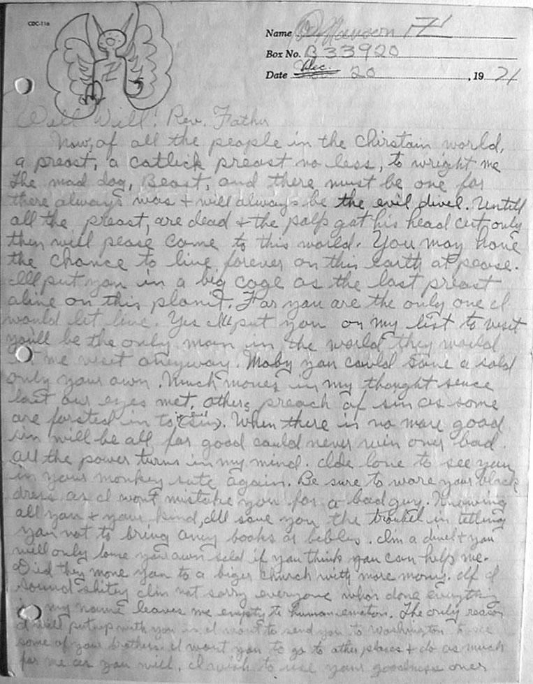

|
|
|
Manson
Letter
12/20/71 |
|
|
|
 |
|
|
|
Verbatim
text of the Manson 12.20.71 letter: |
|
|
|
Well
Well! Rev. Father
now of all the people in the chirstain world, a preast, a catlick preast no less, to wright me The mad dog, Beast, and there must be one for there always was + will always be the evil divel. Untill all the preast, are dead + the polp
got his head cut only then will pease come to this world. You may have the chance to live forever on this earth at pease. Ill put you in a big cage as the last preast alive on this planit. For you are the only one I would let live. Yes Ill put you on my list to visit you'll be the only man in the world they would let me visit anyway. Maby you could save a sold only your own. Much moves in my thought sence last our eyes met. others preach of sin as some are forsted in to it (sin). When there is no more good sin will be all, for good could never win over bad. All the power turns in my mind. Ide love to see you in your monkey sute again. Be sure to ware your black dress as I wont mistake you for a bad guy. Knowing all you + your kind, Ill save you the troubel in letting you not to bring any books or bibles. I'm a divel + you will only lose your own sold if you think you can help me. Did they move you to a biger church with more mony. If I sound shitey I'm not sorry everyone whos
done everything in my name leaves me empty to human emotion. The
only reason I will put up with you and want to send you to
Washington to see some of your brothers I want you to go to
other places + do as much for me as you will. I wish to use your
goodness over . . . |
|
|
|
This
letter was written by Charles Manson to a Catholic priest. Manson loathed
the Catholic Church. He
writes that he would "put you in a big cage."
Zodiac, in his 07.26.70 letter to the Chronicle, writes
that some of his torture victims "shall be placed in cages
. . ." Zodiac also uses the word "impriest." Did he
mean that priests should be placed in cages? This word was
originally written by Gilbert & Sullivan in the
"Mikado" as "Nisi
Prius." |
|
|
|
In
his letter Zodiac says, "I've got a little list."
Manson, above writes "put you on my list". |
|
|
|
Also
in that letter Zodiac writes, "Some I shall tie
over ant
hills and watch them scream
& twich
and squirm."
(Words
that were also used in the 1966 "Confession" letter.) In
1969 Manson had written, "We'll tie
you up to a tree and put honey on you and let the ants
crawl all over you." |
|
|
|
Manson
wrote that, "We will hang
. . . them . . . upside down and skin
them alive."
Zodiac also wrote on 07.26.70, "Others will hang,"
and "Others I shall skin
them alive." |
|
|
|
|
|
Back |
|
|
|
|
|